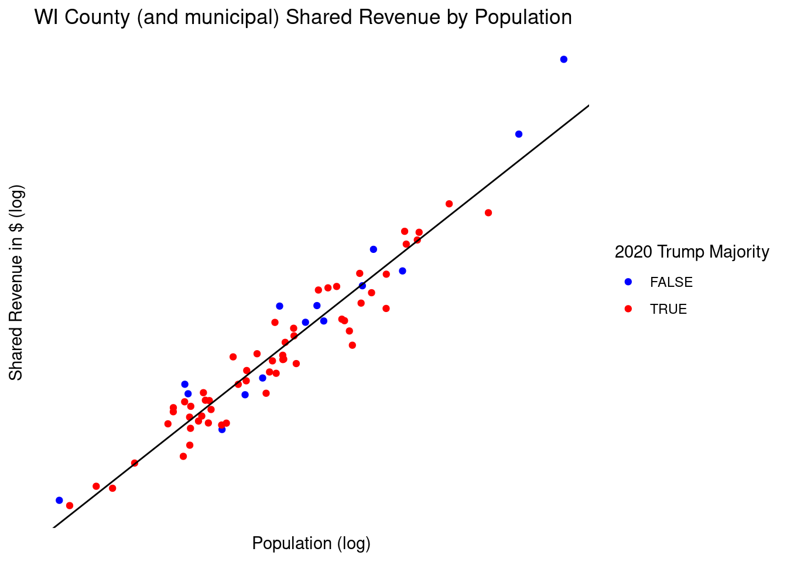
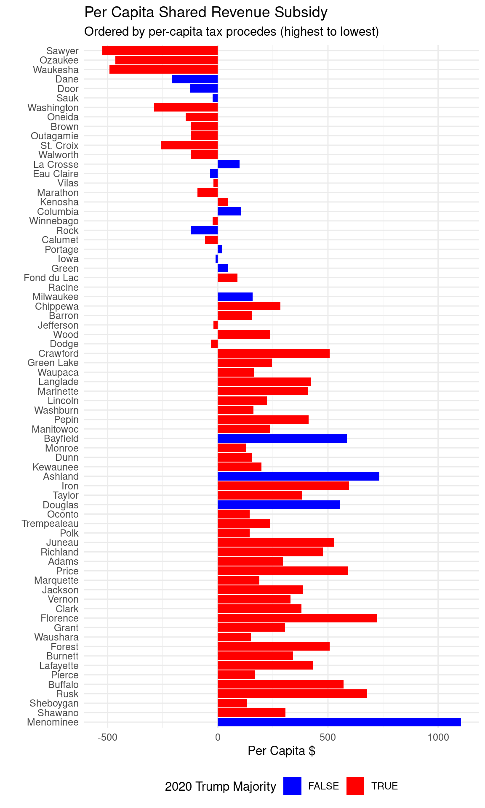
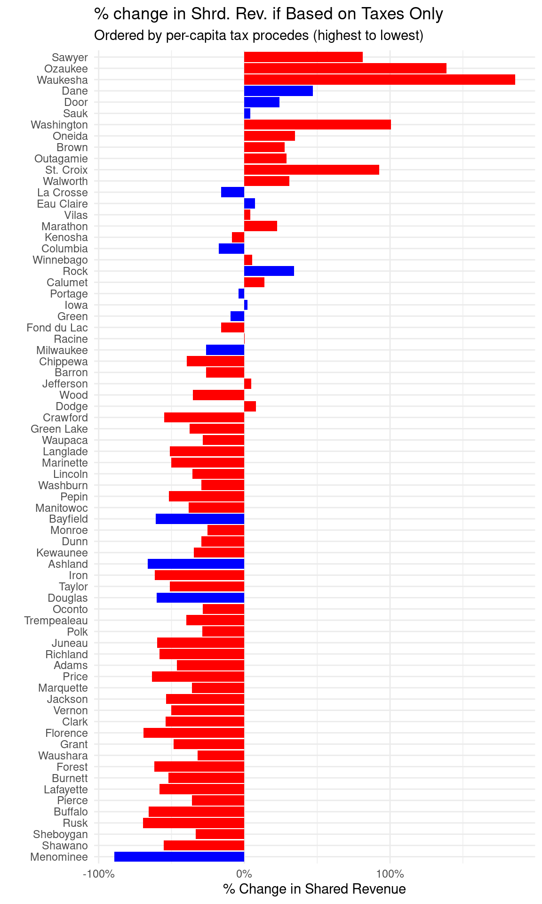

Shared Revenue
Michael J Zenz
July 22, 2023
Shared Revenue is Redistributive
During the spring and summer of 2023 leaders in the Wisconsin legislature along with Governor Evers proposed changes to county and municipal aid, which is a small part of the total state tax procedes shared with local governments. This “shared revenue” is collected primarily through state income and sales taxes and are redistributed to county and municipal governments to help them fund the various services that are typically provided by local rather than state government.
Despite a complex formula for calculating the level of shared revenue, population largely determines the level of shared revenue that each county receives.

Individuals are given roughly equal allocations regardless of where they live, but this can result in local governments receiving proportionally less money in shared revenue than their residents pay in. Richer countries tend to receive less than they pay in, and poorer counties more.

